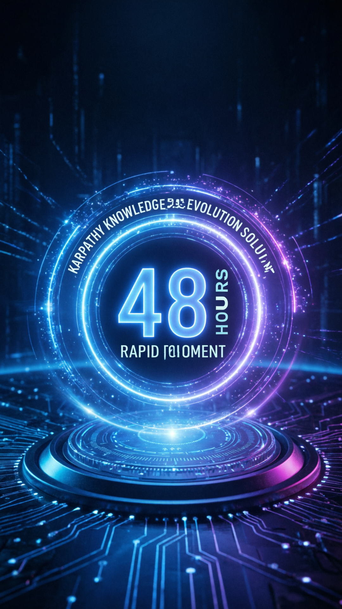

背景故事
从 Karpathy 的分享到开源社区的完美交付
Karpathy 分享
分享个人知识库方案
Step 1
48 小时
开源社区接力开发
Step 2
Graphify 诞生
完全体知识库交付
Step 3
"Karpathy 没做完的，开源社区 48 小时搞定！"
Karpathy 没做完，开源社区 48 小时 搞定！
完全体知识库，Token 节省 71.5 倍
从 Karpathy 的分享到开源社区的完美交付
分享个人知识库方案
开源社区接力开发
完全体知识库交付
"Karpathy 没做完的，开源社区 48 小时搞定！"
三大核心优势，重新定义知识图谱工具
本地 AST 解析，无需将全部内容发送给 LLM，大幅降低 Token 消耗
支持代码、PDF、图片、截图等多种文件类型的智能图谱化处理
无需向量数据库，无需嵌入计算，一行命令即可运行
四大文件类型，统统搞定
智能分析代码结构和依赖关系
提取文档中的关键信息和结构
识别图片中的图表和文字
从截图中提取结构化信息
两阶段流程，兼顾效率与智能
AST 本地提取
使用本地抽象语法树解析，提取结构化信息
LLM 语义抽取
仅将结构化片段发送给 LLM 进行语义理解和图谱构建
仅发送结构化片段，大幅减少 Token 消耗
点击图片可查看大图，支持缩放、旋转、幻灯片播放
知识图谱可视化风格

Karpathy 到 Graphify 的进化
多文件类型图谱化处理
需要快速构建项目知识图谱的程序员
研究知识图谱和 RAG 系统的学者
追求低成本、高效率知识管理的用户